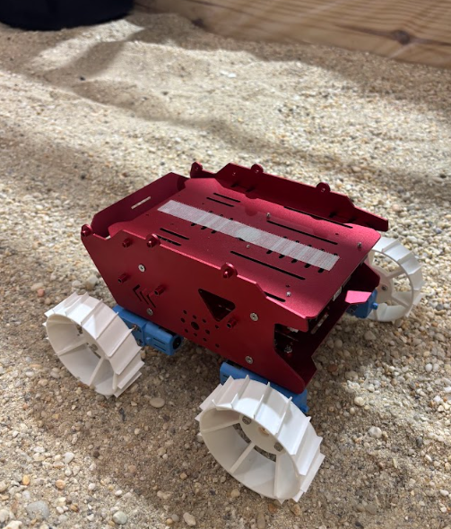
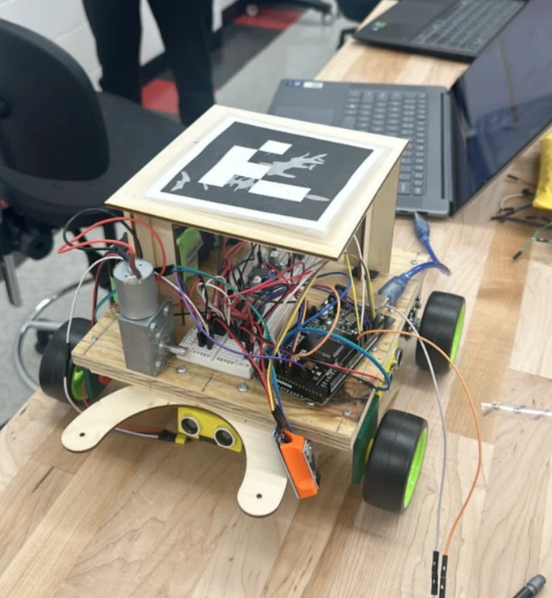

SELECTED WORK
Engineering in practice.
Research, design, prototyping, and testing projects focused on aerospace and mechanical systems.

MECHANICAL DESIGN / RESEARCH
Bevameter Test Rig
A modular mechanical system designed to perform pressure-sinkage and soil shear testing while expanding the capabilities of an existing wheel test platform.

ROVER MOBILITY / DESIGN / TESTING
Rover Wheel Design
Designed, prototyped, and tested wheel and tread concepts for GREMLINS lunar microrovers operating in loose granular terrain.

PROPULSION / ELECTRICAL / PROTOTYPING
Over Terrain Vehicle
Contributed to the design and construction of a small vehicle for a defined engineering challenge, with a focus on propulsion, motor selection, electrical connections, and prototyping.
CONTINUING TO BUILD
Always building
the next thing.
I'm continuing to expand this portfolio as I work on new aerospace, mechanical, and technical projects.
Contact Me